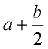

total = pennies * 0.01;
total = count * 0.05 + total;

|
Syntax 2.1: Output Statement cout << expression1 << expressioun2 << ... << expressionn;
|
|
Syntax 2.2: Comments /* comment text */
|
|
Syntax 2.3: Variable
Definition Statement type_name variable_name;
|
cin >> pennies;
cin >> pennies >> nickels >> dimes >> quarters;
8 0 4 3
or
8
0
4
3
|
Syntax 2.4: Input Statement cin >> variable1 >> variable2 >> ... >> variablen;
|
total = pennies * 0.01;
total = count * 0.05 + total;
|
Syntax 2.5: Assignment variable = expression;
|

month++; // add 1 to month
month--; // subtract 1 from month
|
Syntax 2.7: Constant Definition const type_name constant_name = initial_value;
|

9.0 / 4.0 /* 2.25 */
9 / 4.0 /* 2.25 */
9.0 / 4 /* 2.25 */
9 / 4 /* 2 */
9 % 4 /* 1 remainder */
|
Syntax 2.8: Function Call function_name(expression1,expressioun2, ..., expressionn);
|

string name = "John"; // definition and initialization
name = "Carl"; // assignment
cout << name << ", please enter your name:"; // output
cin >> name; // input (stops at first space)
getline(cin, name);to read all keystrokes until the Enter key; e.g. should the user type
Harry Hacker
|
Syntax 2.9: Member Function Call expression.function_name(expression1,expressioun2, ..., expressionn)
|
string greeting = "Hello, World!\n";
string sub = greeting.substr(0,4);
/* sub is "Hell" */
string fname = "Harry";
string lname = "Hacker";
string name = fname + " " + lname;
will produce (form1.cpp):cout << pennies << " " << pennies * 0.01 << "\n";
cout << nickels << " " << nickels * 0.05<< "\n";
cout << dimes << " " << dimes * 0.1 << "\n";
cout << quarters << " " << quarters * 0.25 << "\n";
1 0.01
12 0.60
4 0.40
120 30.00
creates the table (form2.cpp):cout << fixed << setprecision(2);
cout << setw(8) << pennies << " "
<< setw(8) << pennies * 0.01 << "\n";
cout << setw(8) << nickles << " "
<< setw(8) << nickles * 0.05<< "\n";
cout << setw(8) << dimes << " "
<< setw(8) << dimes * 0.1 << "\n";
cout << setw(8) << quarters << " "
<< setw(8) << quarters * 0.25 << "\n";
1 0.01
12 0.60
4 0.40
120 30.00